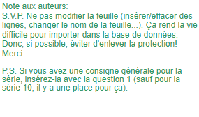
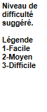

| Saison #24 - Troisième série de Questionnaires | ||||||||
| Numéro de Questionnaire | 17 | |||||||
| Date de création : | 20-mars-26 | |||||||
| Auteur(s) : | Steeve, Vincent P., Vincent H., Samuel, Marie-Hélène | |||||||
| Équipe de(s) l’auteur(s) : | Les Bons Perdants | |||||||
| Date des parties : | 25 et 26 mars 2026 | |||||||
| Partie 1 | Faciles à cuire VS Méthos précieux | |||||||
| Partie 2 | Herbizarres VS Érudits en gerbe | |||||||
| Série 1 | Langue | |||||||
| Individuelle | Remplacer un mot pour corriger l'erreur dans les perronismes (Animateur: le gras et la majuscule identifient le mot à corriger, lire normalement) | |||||||
| Rédiger 8 questions de niveaux faciles et constants. | ||||||||
| Équipe A | ||||||||
| 1 | 1 | "Ça ne prend vraiment pas la tête à BOBINO" | Papineau | |||||
| 1 | 2 | "Ce joueur-là a vraiment les deux YEUX dans la même bottine" | Pieds | |||||
| 1 | 3 | "Il a pris la FOUDRE d'escampette" | Poudre | |||||
| 1 | 4 | "Il a vraiment besoin de redorer son PLASTRON" | Blason | |||||
| Équipe B | ||||||||
| 1 | 5 | "C'est vraiment CHARRIÉ par les cheveux" | Tiré | |||||
| 1 | 6 | "Il ne faudrait pas se FLATTER les bretelles" | Péter | |||||
| 1 | 7 | "Il ne faut pas tout prendre au PLI de la lettre" | Pied | |||||
| 1 | 8 | "Cette fois-ci, ils sont ACCUMULÉS au pied du mur" | Acculés | |||||
| Série 2 | Géographie | |||||||
| Collective | ||||||||
| Les 5 questions doivent couvrir l'ensemble du thème. Varier les sujets, formulations, longueurs, difficultés, etc. | ||||||||
| 1 à 3 | 1 | Quel est le seul pays enclavé d'Asie du Sud-Est? | Laos | |||||
| 1 à 3 | 2 | Dans quel état australien peut-on admirer le mont Craddle? | Tasmanie | |||||
| 1 à 3 | 3 | Quelle rivière enjambe le pont des Allumettes, qui relie l'Isle-aux-allumettes au Québec à Pembroke en Ontario. | Rivière des Outaouais | |||||
| 1 à 3 | 4 | Dans quel pays est-il possible d'explorer l'épave du SS Thistlegorm, un cargo coulé par l'aviation allemande en 1941 et découvert par Jacques-Yves Cousteau dans les années 1950? | Égypte | |||||
| 1 à 3 | 5 | Quel lac, alimenté principalement par le Rhône, est le plus grand d'Europe de l'Ouest et sépare la France, en Haute-Savoie, de la Suisse, principalement dans le canton de Vaud? | Léman (accepter Lac de Genève) | |||||
| Série 3 | Cinéma et télévision | |||||||
| Collective | ||||||||
| Les 5 questions doivent couvrir l'ensemble des thèmes. Varier les sujets, formulations, longueurs, difficultés, etc. | ||||||||
| 1 à 3 | 1 | À quelle émission humoristique diffusée de 1986 à 1990 associez-vous l'acteur qui incarne le personnage de Vlad dans le film Carmina, film qu'il a d'ailleurs co-scénarisé? | Rock et belles oreilles (accepter RBO) | |||||
| 1 à 3 | 2 | Quel film de Ryan Coogler a récolté 4 prix lors de la plus récente cérémonie des Oscars, dont celui du meilleur scénario, ainsi que l'Oscar du meilleur acteur, remis à Michael B. Jordan qui y incarne les jumeaux Elijah et Elias? | Sinners (v.f. Pécheurs) | |||||
| 1 à 3 | 3 | Quel film muet allemand réalisé par Friedrich Willhelm Murnau en 1922, auquel Tim Burton fait référence dans la plupart de ses films, est une adaptation du roman Dracula? | Nosferatu le vampire (accepter Nosferatu) | |||||
| 1 à 3 | 4 | Quelle réalisatrice chinoise devait signer une relance de la populaire série "Buffy contre les vampires" (en anglais Buffy the vampire slayer) sur Hulu; elle qui est surtout connue pour ses films Hamnet et Nomadland? | Chloé ZHAO | |||||
| 1 à 3 | 5 | Quel film d'Arianne Louis-Seize a remporté le prix de la meilleure réalisation à la Mostra de Venise en 2023, en plus des prix Iris 2024 du meilleur film québécois de l'année, du meilleur scénario et du meilleur premier film? | Vampire humaniste cherche suicidaire consentant | |||||
| Série 4 | Histoire et société | |||||||
| Collective | ||||||||
| Au moins 2 questions dans chacun des thèmes. | ||||||||
| 1 à 3 | 1 | Quel conquistador espagnol était à la tête de l’expédition ayant conquis l’empire Inca? | Francisco PIZARRO | |||||
| 1 à 3 | 2 | Quel état fantoche a été établi et contrôlé par le Japon de 1932 à 1945 dans le Nord-Est de la Chine ? | Mandchoukouo | |||||
| 1 à 3 | 3 | À 500 millions près, à combien est projeté le déficit du gouvernement du Québec en 2026-2027 ? | 8,6 milliards | |||||
| 1 à 3 | 4 | Quelles deux provinces canadiennes ont joint la Confédération en 1905 ? | Alberta et Saskatchewan | |||||
| 1 à 3 | 5 | Quelle auteure et activiste Canadienne, auteure du livre ‘No logo’, est connue pour ses critiques du capitalisme ? | Naomi Klein | |||||
| Série 5 | Une année, décennie ou siècle | |||||||
| Contrôle | 1964 | |||||||
| Choisir une année (décennie ou siècle pour les époques plus anciennes) et poser 5 questions relatives à cette période. Les questions doivent être diversifiées, sports, politiques, arts, etc. La première question vaut 5 points. | ||||||||
| 1 ou 2 | 1 | Quel journal a été publié pour la première fois le 15 juin 1964 à Montréal? | Journal de Montréal (JdM) | |||||
| 2 ou 3 | 2 | Quel couple mythique américain s'est marié à Montréal le 15 mars 1964 parce que les autorités de Toronto, où il jouait au théâtre, ont refusé de reconnaître leurs divorces récents du Mexique, les empêchant de se marier en Ontario? | Richard Burton et Elizabeth Taylor | |||||
| 2 ou 3 | 3 | Quel nom porte la sixième session de l'accord général sur les droits de douane et le commerce (GATT) qui s'est tenu en Suisse à partir de 1964? | Kennedy (Kennedy Round) | |||||
| 2 ou 3 | 4 | Dans quelle discipline Peter Kirby, Douglas Anakin, John Emery et Vic Emery ont-ils remporté une médaille d'or aux Jeux olympiques d'hiver de 1964 à Innsbruck? | Bobsleigh (bobsleigh à quatre ou bob à quatre) | |||||
| 2 ou 3 | 5 | Quelle chanson, interprétée par la franco-manitobaine Lucielle Starr en 1964, raconte l'histoire d'un cowboy qui vit loin de sa famille, chanson qui a été reprise par Patrick Norman et Renée Martel? | Quand le soleil dit bonjour aux montagnes | |||||
| Série 6 | #RÉF ! | |||||||
| Les 4 V | ||||||||
| Une bonne réponse élimine le joueur pour la série. Si tous les joueurs d'une équipe ont une bonne réponse, la série se poursuit en collectives pour 5 points. | ||||||||
| 1 | 1 | Qui est l'actuel maire de la ville de Laval? | Stéphane BOYER | |||||
| 1 | 2 | Comment se nomme le pharaon devenu célébre grâce à la découverte de sa tombe demeurée intacte par Howard Carter en 1922? | Toutankhamon | |||||
| 1 | 3 | Quelle chanson écoutaient les chercheurs lorsqu'ils ont donné le nom de Lucy au squelette d'une femme australopithèque qu'ils ont découvert en Éthiopie en 1974? | Lucy in the sky with diamonds | |||||
| 1 | 4 | En quelle année l'URSS a été dissoute? | 1991 | |||||
| 1 | 5 | Qui fut la première femme a être première ministre du Canada en 1993? | Kim CAMPBELL | |||||
| 1 | 6 | A quel siècle correspond le siècle des Lumières? | 18e siècle | |||||
| 1 | 7 | En quelle année aura lieu le prochain recensement au Canada? | 2026 | |||||
| 1 | 8 | Quel évément mondial majeur a débuté officiellement en mars 2020 avec une déclaration officielle de l'OMS? | La pandémie de Covid-19 | |||||
| Série 7 | Arts et littérature | |||||||
| Collective | ||||||||
| Au moins 2 questions dans chacun des thèmes. | ||||||||
| 1 à 3 | 1 | Quelle comédie musicale, adaptée d'un livre éponyme de Victor Hugo, a vu le jour à Paris en 1980 et demeure l'un des plus grands succès jusqu'à ce jour? | Les Misérables | |||||
| 1 à 3 | 2 | Dans quelle série de romans peut-on suivre les personnages de Jacob Black, Edward Cullen et Bella Swan? | La saga Twilight | |||||
| 1 à 3 | 3 | Quel écrivain, né le 19 janvier 1809 à Boston et reconnu pour ses nouvelles, est considéré comme l'inventeur des romans policiers? | Edgar Allan Poe | |||||
| 1 à 3 | 4 | Quel monument religieux en construction depuis 1866 a finalement atteint sa hauteur maximale prévue le 20 février dernier? | La Sagrada Familia | |||||
| 1 à 3 | 5 | Quel peintre italien a réalisé les célèbres œuvres L'homme de Vitruve, La Cène et la Joconde? | Leonard Da Vinci | |||||
| Série 8 | Sports et loisirs | |||||||
| Collective | ||||||||
| Au moins 2 questions dans chacun des thèmes. | ||||||||
| 1 à 3 | 1 | Comment se nomme le trophée remis à l'équipe championne des séries mondiale dans la MLB ? | Trophée du Commissaire | |||||
| 1 à 3 | 2 | Qui sont les deux pilotes de F1 pour la nouvelle écurie Cadillac en 2026 ? | Valtteri Bottas et Sergio Perez | |||||
| 1 à 3 | 3 | Comment s'appelle la version du jeu société Wingspan où les cartes sont illustrées par différentes sortes de poissons ? | Finspan | |||||
| 1 à 3 | 4 | Quelle équipe de football universitaire canadien a remporté la coupe Vanier en 2025 ? | Carabins de l'Université de Montréal (accepter Carabins ou Université de Montréal) | |||||
| 1 à 3 | 5 | Quelle franchise de jeux vidéo a célébré ses 30 ans le 27 février 2026 ? | Pokémon | |||||
| Série 9 | #RÉF ! | |||||||
| Question à indice | ||||||||
| Dès le 1er indice, il ne doit pas y avoir plusieurs réponses possibles. Le premier indice devrait être très difficile! | ||||||||
| 3 | 1 | Sport qui se pratiquait au Mexique dès le 11e siècle, il se disputait souvent sur un terrain entre deux villages voisins où les buts pouvaient être distants de 500 mètres à plusieurs kilomètres et où les joutes pouvaient durer plusieurs jours. | ||||||
| 2 | 2 | En 1975, les Caribous de Québec furent champions de la ligue nationale de ce sport dont les règles avaient été codifiées en 1867 par le Canadien William George Beers. | ||||||
| 1 | 3 | Portant le même nom qu'un bâton pastoral, il faut utiliser dans la version moderne de ce sport un bâton recourbé muni d'un filet pour attraper une balle de caoutchouc et la lancer dans le filet de son adversaire. | Crosse | |||||
| Série 10 | #RÉF ! | |||||||
| Vis-à-vis | Villes canadiennes avec un nom d'animal | |||||||
| Il est normal que ces 4 questions soient parmi les plus faciles du questionnaire | ||||||||
| 1 | 1 | Troisième ville la plus peuplée d'Alberta, son nom peut se traduire librement par "chevreuil Rouge". | Red Deer | |||||
| 1 | 2 | Petite ville du Québec d'environ 28 000 habitants située dans la région du Bas-Saint-Laurent et où les habitants se nomment Louperivois. | Rivière-du-loup | |||||
| 1 | 3 | Quatrième ville la plus peuplée de la Saskatchewan, son nom peut se traduire librement par "mâchoire d'orignal". | Moose Jaw | |||||
| 1 | 4 | Cette ville a remplacé Dawson City comme capitale du Yukon en 1953. | Whitehorse | |||||
| Série 11 | Musique | |||||||
| Collective | ||||||||
| Les 5 questions doivent couvrir l'ensemble du thème. Varier les sujets, formulations, longueurs, difficultés, etc. | ||||||||
| 1 à 3 | 1 | Combien de touches retrouve-t-on sur un piano standard moderne? | 88 | |||||
| 1 à 3 | 2 | Quelle chanteuse canadienne que l'on peut entendre chanter en inuktituk a remporté à l'ADISQ le prix de l'artiste autochtone de l'année en 2024? | Elisapie (Elisapie Isaac) | |||||
| 1 à 3 | 3 | En quelle année est sorti le dernier album studio des Beatles Let it Be? | 1970 | |||||
| 1 à 3 | 4 | Populaire en Europe du 16e au 18e siècle, comment se nomme l'instrument de musique muni d'un clavier dont les cordes sont pincées grâce au dispositif de sautereau? | Clavecin | |||||
| 1 à 3 | 5 | Quels deux groupes de musique ont donné des prestations écourtées au Stade olympique de Montréal le 8 août 1992, causant une émeute d'envergure de 57 000 fans en colère? | Metallica et Guns N'Roses | |||||
| Série 12 | Sciences | |||||||
| Collective | ||||||||
| Les 5 questions doivent couvrir l'ensemble du thème. Varier les sujets, formulations, longueurs, difficultés, etc. | ||||||||
| 1 à 3 | 1 | Quel mathématicien a donné son nom au célèbre diagramme qui permet d’illustrer des ensembles à l’aide de cercles distincts qui peuvent s’intersectionner ? | John Venn | |||||
| 1 à 3 | 2 | Que représente la variable m dans l’équation de la 2e loi du mouvement de Newton ? | Masse | |||||
| 1 à 3 | 3 | Quel rapport triognométrique est équivalent à faire la divsion du sinus d’un angle par le cosinus du même angle ? | Tangente | |||||
| 1 à 3 | 4 | Quel terme débutant par la lettre E désigne le système du corps humain composé de l’ensemble des organes qui ont la capacité de relâcher des hormones dans le sang ? | Système endocrinien | |||||
| 1 à 3 | 5 | Comment appelle-t-on deux atomes d’un même élément chimique qui ont le même nombre de protons mais des quantités différentes de neutrons ? | Isotopes | |||||
| Série 13 | Libre | |||||||
| Choix d'associations | Choix entre "Animal et géogaphie" ou "Sport et politique" | |||||||
| Deux séries d'associations de 4 éléments. L'inconnue correctement identifiée et bien associée vaut 20 points, les autres bonnes associations valent 10 points chacune. | ||||||||
| Sous-thème 1 (doit être précis et non relié au sous-thème 2) | ||||||||
| Choix 1: Associez le nom de l'animal à l'État américain dans lequel évolue l'équipe de la NFL dont le nom correspond à la race de cet animal. | ||||||||
| 1 à 3 | 1 | Flipper | B) (Dauphin-Dolpins-Miami) | |||||
| 1 à 3 | 2 | Paddington | C) (Ours-Bears-Chicago) | |||||
| 1 à 3 | 3 | Bagheera | A) (Panthère-Panthers-Caroline) | |||||
| 1 à 3 | 4 | Mufasa | D) MICHIGAN (Lion-Lions-Détroit) | |||||
| A | Caroline du Nord | |||||||
| B | Floride | |||||||
| C | Illinois | |||||||
| D | (inconnu) | |||||||
| Sous-thème 2 (doit être précis et non relié au sous-thème 1) | ||||||||
| Qui est le dirigeant actuel du pays ayant accueilli les Jeux olympiques d'hiver aux années suivantes. | ||||||||
| 1 à 3 | 1 | 2006 | B) (Turin-Italie) | |||||
| 1 à 3 | 2 | 1998 | C) (Nagano-Japon) | |||||
| 1 à 3 | 3 | 1936 | A) (Garmisch-Partenkirchen-Allemagne) | |||||
| 1 à 3 | 4 | 1924 | D) MACRON (Chamonix-France) | |||||
| A | Friedrich Merz | |||||||
| B | Giorgia Meloni | |||||||
| C | Sanae Takaishi | |||||||
| D | (inconnu) | |||||||
| Série 14 | Divers | |||||||
| Questions Éclair | ||||||||
| Viser des questions courtes couvrant un maximum de thèmes différents. | ||||||||
| 1 ou 2 | 1 | Quelle est la capitale du Bangladesh ? | Dhaka | |||||
| 1 ou 2 | 2 | Quel oiseau caractérisé par un grand bec muni d'une poche extensible prête son nom à l'équipe de la NBA de la Nouvelle-Orléans ? | Pélicans | |||||
| 1 ou 2 | 3 | Combien d'atomes de carbone y a-t-il dans une molécule de propane ? | Trois | |||||
| 1 ou 2 | 4 | Quelle chanteuse a publié les albums Animal et Cannibal en 2010 ? | Kesha (Kesha Rose Sebert) | |||||
| 1 ou 2 | 5 | De quel pays pays est originaire la compagnie Red Bull ? | Autriche | |||||
| 1 ou 2 | 6 | À combien de radians équivaut un angle de 90 degrés ? | π/2 | |||||
| 1 ou 2 | 7 | Comment dit-on la couleur jaune en espagnol ? | Amarillo | |||||
| 1 ou 2 | 8 | Sous quel pseudonyme l'autrice américaine de la série de romans à succès La Femme de Ménage est-elle connue ? | Freida McFadden | |||||
| 1 ou 2 | 9 | Qui sont les deux humoristes qui animent le balado intitulé Tout le monde s'haît ? | Sam Cyr et Marylene Gendron | |||||
| 1 ou 2 | 10 | Au jeu de cartes Uno, quel mot faut-il crier lorsqu'il nous reste qu'une seule carte sous peine de pénalité? | Uno | |||||
| Série 15 | Actualité | |||||||
| Question prime | ||||||||
| Poser une question demandant une réponse simple, pour éviter les ambiguïtés. | ||||||||
| 1 à 3 | 1 | Le 8 mars 2026, quelle province canadienne a changé d'heure pour la dernière fois et ainsi demeurée à l'heure avancée? | Colombie-Britannique | |||||

